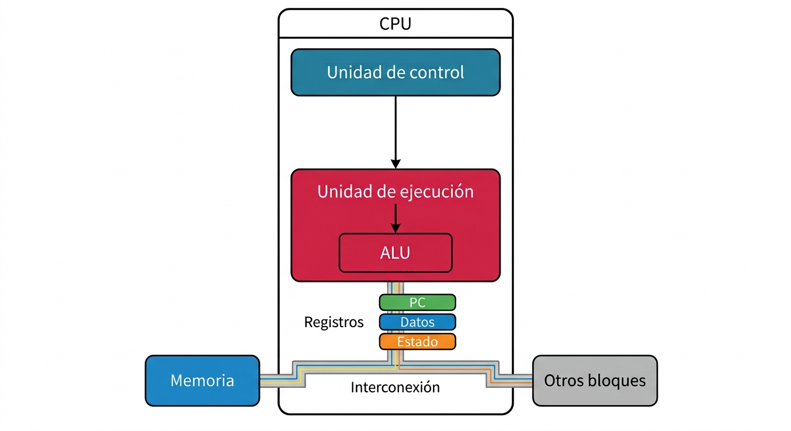

CPU, MICROPROCESADOR Y MICROCONTROLADOR
INTRODUCCIÓN
Para comprender cómo funciona un sistema embebido es necesario distinguir tres conceptos relacionados, pero diferentes: CPU, microprocesador y microcontrolador (MCU).
La diferencia es importante porque un sistema embebido no está formado únicamente por una unidad que ejecuta instrucciones. Para funcionar necesita memoria, mecanismos de entrada y salida, temporización, comunicación y otros recursos de hardware y software.
La CPU (Central Processing Unit) es la unidad encargada de ejecutar las instrucciones de un programa.
Un microprocesador es un circuito integrado cuya función principal es proporcionar capacidad de procesamiento y que, dependiendo de su arquitectura, puede requerir memoria, interfaces y otros componentes externos para formar un sistema completo.
Un microcontrolador (MCU, Microcontroller Unit) integra en un mismo circuito integrado una o más unidades de procesamiento junto con memoria y diferentes periféricos destinados al control y procesamiento de un sistema.
La característica fundamental del microcontrolador es, por tanto, el nivel de integración. Muchos de los recursos que un sistema necesita pueden encontrarse dentro del mismo dispositivo, aunque el MCU no necesariamente contiene todo lo necesario para construir un sistema embebido completo.
Para estudiar estos conceptos correctamente conviene separar dos niveles:
- los principios generales que comparten diferentes arquitecturas;
- la forma concreta en que cada fabricante y cada familia implementa esos principios.
Un AVR, un PIC, un Cortex-M o un microcontrolador basado en RISC-V pueden tener arquitecturas internas diferentes y, al mismo tiempo, compartir los mismos conceptos fundamentales de procesamiento.
1. LA CPU
1.1. Función de la CPU
La CPU es el componente encargado de ejecutar las instrucciones que forman un programa.
Su función consiste en obtener instrucciones, interpretarlas, realizar las operaciones correspondientes y coordinar el movimiento de información necesario para ejecutar el programa.
La CPU no debe entenderse simplemente como una unidad que realiza cálculos. Está formada por varios bloques funcionales que trabajan de manera coordinada.
La organización concreta depende de la arquitectura del procesador, pero conceptualmente pueden distinguirse:
- unidad de control, encargada de coordinar la ejecución de las instrucciones;
- registros, utilizados para almacenar temporalmente datos, direcciones, resultados y estados;
- unidad de ejecución, que realiza las operaciones indicadas por las instrucciones;
- ALU (Arithmetic Logic Unit), encargada de muchas operaciones aritméticas y lógicas;
- contador de programa (PC, Program Counter), que mantiene la referencia necesaria para continuar la ejecución del programa;
- registros de estado, que almacenan determinadas condiciones producidas durante la ejecución;
- mecanismos para acceder a memoria y comunicarse con la infraestructura de interconexión del sistema.
No todas las CPU organizan internamente estos elementos de la misma manera ni utilizan exactamente la misma terminología.
Por ello, estos bloques deben entenderse como un modelo conceptual, no como un esquema físico universal.
1.2. La unidad de control
La unidad de control coordina la ejecución de las instrucciones.
Cuando la CPU obtiene una instrucción, debe determinar qué operación representa y qué recursos internos deben participar en su ejecución.
La unidad de control participa en este proceso coordinando las señales necesarias para que los registros, la unidad de ejecución y los mecanismos de acceso a memoria realicen las operaciones correspondientes.
La forma en que se implementa esta función depende de la arquitectura.
En procesadores sencillos puede existir una lógica de control relativamente simple. En procesadores más complejos pueden utilizarse estructuras mucho más elaboradas.
Por tanto, la unidad de control no debe entenderse como un bloque idéntico en todos los procesadores, sino como la función encargada de coordinar la ejecución de las instrucciones.
1.3. Los registros
Los registros son elementos de almacenamiento internos de la CPU utilizados para mantener información durante la ejecución.
Son de acceso muy rápido y están directamente relacionados con el funcionamiento de las instrucciones.
Dependiendo de la arquitectura, pueden utilizarse para almacenar:
- operandos;
- resultados intermedios;
- direcciones;
- datos;
- información de control;
- estados de operación.
La cantidad, tamaño y organización de los registros dependen de la arquitectura.
Por ejemplo, un procesador puede disponer de un conjunto de registros de propósito general y de registros especiales destinados a funciones concretas.
Entre estos últimos se encuentra normalmente algún mecanismo equivalente al contador de programa y a los registros de estado, aunque su nombre y organización pueden variar.
1.4. La ALU
La ALU (Arithmetic Logic Unit, unidad aritmético-lógica) es una parte de la unidad de ejecución encargada de realizar muchas de las operaciones aritméticas y lógicas que necesita el programa.
Entre ellas pueden encontrarse:
- suma y resta;
- operaciones AND, OR y XOR;
- desplazamientos y rotaciones;
- comparaciones;
- operaciones relacionadas con bits.
La arquitectura puede disponer además de unidades especializadas para otras operaciones, como multiplicación, división, punto flotante, procesamiento vectorial u otras funciones.
Por esta razón, la ALU no debe considerarse sinónimo de CPU.
Una forma más precisa de expresarlo es:
La ALU es uno de los componentes de la unidad de ejecución de la CPU.
La CPU incluye además registros, control de instrucciones y otros mecanismos necesarios para coordinar todo el proceso.
1.5. El contador de programa
El PC (Program Counter, contador de programa) es un registro que permite a la CPU mantener la referencia necesaria para continuar la ejecución del programa.
De forma simplificada, durante la búsqueda de una instrucción, la CPU utiliza el valor del PC para determinar dónde obtener la siguiente instrucción.
Después de obtener una instrucción, el PC normalmente se actualiza para continuar con la secuencia de ejecución.
Sin embargo, el flujo normal puede modificarse mediante instrucciones o mecanismos que cambian la dirección de ejecución.
Entre ellos se encuentran:
- saltos;
- llamadas a funciones;
- retornos;
- interrupciones;
- excepciones.
Cuando ocurre uno de estos eventos, la CPU puede continuar la ejecución desde una dirección diferente.
La forma exacta en que funciona el PC y cómo se actualiza depende de la arquitectura del procesador.
1.6. Los registros de estado
Las CPU suelen disponer de uno o varios registros que contienen información sobre el estado de determinadas operaciones.
Estos registros pueden almacenar indicadores o flags producidos por instrucciones anteriores.
Por ejemplo, una operación puede producir información que indique:
- que el resultado es cero;
- que se produjo un acarreo;
- que ocurrió un desbordamiento;
- que se cumple una determinada condición definida por la arquitectura.
Estos indicadores pueden utilizarse posteriormente en operaciones de comparación o control de flujo.
La organización y el nombre de estos registros varían entre arquitecturas. Por ello, en un manual general es preferible hablar de registros de estado y estudiar posteriormente su implementación concreta en cada familia de procesadores.
1.7. La CPU como conjunto de unidades coordinadas
Desde una perspectiva conceptual, la CPU puede representarse como la combinación de:
unidad de control + registros + unidad de ejecución + mecanismos de acceso e interconexión.
La unidad de ejecución puede incluir una ALU y, dependiendo de la arquitectura, otras unidades especializadas.

┌──────────────────────────┐
│ CPU │
│ │
│ ┌────────────────────┐ │
│ │ Unidad de control │ │
│ └─────────┬──────────┘ │
│ │ │
│ ▼ │
│ ┌────────────────────┐ │
│ │ Unidad de ejecución│ │
│ │ │ │
│ │ ┌─────┐ │ │
│ │ │ ALU │ │ │
│ │ └─────┘ │ │
│ └────────────────────┘ │
│ │
│ Registros │
│ ├── PC │
│ ├── Datos │
│ └── Estado │
│ │
└────────────┬─────────────┘
│
Interconexión
│
┌─────────┴─────────┐
│ │
Memoria Otros bloques
Este esquema es conceptual. No representa el diseño físico de una CPU concreta.
Lo importante es comprender que la CPU no es únicamente la ALU. Es un conjunto de unidades coordinadas que permiten obtener, interpretar y ejecutar instrucciones y trabajar con los datos necesarios para el programa.
2. EL CICLO DE EJECUCIÓN DE UNA INSTRUCCIÓN
Para comprender cómo trabaja una CPU puede utilizarse un modelo simplificado basado en tres etapas:
Fetch → Decode → Execute
que pueden traducirse como:
Búsqueda → Decodificación → Ejecución
Este modelo resulta útil para introducir el funcionamiento de un procesador, pero debe entenderse como una representación conceptual.
Una CPU real puede dividir el proceso en más etapas, ejecutar diferentes operaciones de manera simultánea o utilizar mecanismos como pipeline, ejecución paralela u otras técnicas.
2.1. Búsqueda de la instrucción
Durante la etapa de búsqueda (fetch), la CPU obtiene la instrucción que debe ejecutar.
El contador de programa proporciona la referencia necesaria para localizar la instrucción correspondiente.
PC
│
▼
Dirección de instrucción
│
▼
Memoria
│
│ instrucción
▼
CPU
La CPU obtiene la instrucción y la prepara para su interpretación.
El comportamiento exacto de esta operación depende de la arquitectura y de la organización de memoria del procesador.
2.2. Decodificación
Durante la etapa de decodificación (decode), la CPU interpreta la instrucción obtenida.
La instrucción contiene información que permite determinar qué operación debe realizarse y, dependiendo de la arquitectura, qué registros, datos, direcciones o recursos deben utilizarse.
Una instrucción puede indicar, por ejemplo:
- realizar una suma;
- cargar un dato;
- almacenar un dato;
- comparar valores;
- modificar un registro;
- realizar una operación lógica;
- cambiar el flujo de ejecución.
La forma en que las instrucciones están codificadas y cómo son interpretadas depende del conjunto de instrucciones (ISA, Instruction Set Architecture) de cada procesador.
2.3. Ejecución
Durante la etapa de ejecución (execute), la CPU realiza la operación indicada por la instrucción.
Dependiendo de la instrucción y de la arquitectura, esto puede implicar:
- realizar una operación en la ALU;
- transferir datos entre registros;
- acceder a memoria;
- actualizar el PC;
- modificar registros de estado;
- interactuar con otros recursos internos.
Una vez completada la operación, la CPU continúa con la siguiente instrucción según las reglas definidas por la arquitectura.
┌───────────────┐
│ FETCH │
│ Búsqueda │
└───────┬───────┘
│
▼
┌───────────────┐
│ DECODE │
│ Decodificación│
└───────┬───────┘
│
▼
┌───────────────┐
│ EXECUTE │
│ Ejecución │
└───────┬───────┘
│
▼
Siguiente
instrucción
Este modelo constituye una base fundamental para comprender el funcionamiento de un procesador.
Sin embargo:
Fetch → Decode → Execute es un modelo conceptual y no una descripción física universal de todas las CPU.
3. CPU, MEMORIA E INTERCONEXIÓN
La CPU no funciona de manera aislada.
Para ejecutar un programa necesita obtener instrucciones, trabajar con datos y, cuando corresponde, intercambiar información con otros bloques del sistema.
Por ello, un sistema de procesamiento necesita como mínimo mecanismos que permitan relacionar:
- procesamiento;
- almacenamiento;
- entrada y salida;
- interconexión.
┌───────────┐
│ CPU │
└─────┬─────┘
│
Interconexión
│
┌──────────────┼──────────────┐
│ │ │
▼ ▼ ▼
Memoria Periféricos Otros bloques
│ │
│ │
Programa y datos Entrada/salida
La forma en que estos bloques están conectados depende de la arquitectura.
Algunos procesadores utilizan uno o varios buses internos. Otros pueden utilizar estructuras de interconexión más complejas.
También puede existir una separación entre los caminos utilizados para instrucciones y los utilizados para datos.
Por tanto, no existe una única organización interna válida para todos los procesadores y microcontroladores.
4. EL MICROPROCESADOR
Un microprocesador es un circuito integrado cuya función principal es proporcionar capacidad de procesamiento mediante una CPU o uno o varios núcleos de procesamiento.
En una organización tradicional, el microprocesador depende de otros componentes para construir un sistema completo.
Estos componentes pueden incluir:
- memoria;
- dispositivos de entrada y salida;
- almacenamiento;
- controladores;
- interfaces de comunicación;
- circuitos de reloj;
- circuitos de alimentación;
- otros dispositivos especializados.
┌──────────────────┐
│ MICROPROCESADOR │
│ │
│ CPU │
│ │
│ ┌────────────┐ │
│ │ ALU │ │
│ └────────────┘ │
│ │
│ Registros │
│ Control │
└────────┬─────────┘
│
Interconexión
│
┌─────────────┼─────────────┐
│ │ │
▼ ▼ ▼
Memoria E/S Otros dispositivos
Esta organización proporciona flexibilidad porque permite seleccionar externamente los recursos necesarios para una aplicación.
Sin embargo, los microprocesadores modernos pueden integrar más recursos que los que tradicionalmente se asociaban con este concepto. Por ello, la frontera entre microprocesadores, MPU y SoC no siempre es estricta.
La diferencia fundamental con un MCU debe entenderse principalmente en términos de nivel de integración y propósito del dispositivo, no como una lista rígida de componentes que uno debe tener y el otro no.
5. EL MICROCONTROLADOR
El microcontrolador (MCU, Microcontroller Unit) es un circuito integrado que reúne en un mismo dispositivo una o más unidades de procesamiento junto con memoria y periféricos destinados al control y procesamiento de un sistema.
┌──────────────────────────────────┐
│ MICROCONTROLADOR │
│ │
│ ┌──────────────────────────┐ │
│ │ CPU │ │
│ │ │ │
│ │ Control + registros │ │
│ │ + unidad de ejecución │ │
│ └────────────┬─────────────┘ │
│ │ │
│ Interconexión │
│ interna │
│ │ │
│ ┌────────────┼─────────────┐ │
│ │ │ │ │
│ ▼ ▼ ▼ │
│ Memoria GPIO Periféricos│
│ ├ Timers │
│ ├ UART │
│ ├ SPI │
│ ├ I²C │
│ ├ ADC* │
│ └ otros │
│ │
└──────────────────────────────────┘
* Cuando está disponible.
Entre los recursos que puede integrar un MCU se encuentran:
- memoria de programa;
- memoria de datos;
- GPIO;
- temporizadores y contadores;
- PWM;
- interfaces de comunicación;
- controladores de interrupciones;
- ADC;
- DAC;
- comparadores;
- watchdog;
- RTC;
- DMA;
- otros periféricos especializados.
No todos los microcontroladores incluyen todos estos recursos.
Por ello, cuando se afirma que un MCU integra periféricos, debe entenderse que el conjunto concreto de periféricos depende del dispositivo.
La integración permite reducir la cantidad de componentes externos necesarios para determinadas aplicaciones y puede contribuir a reducir el tamaño, costo y consumo del sistema.
Sin embargo, un MCU tampoco contiene necesariamente todo lo que necesita una aplicación. Puede requerir sensores, actuadores, circuitos de potencia, memoria externa, transceptores u otros componentes.
6. LA MEMORIA DEL MICROCONTROLADOR
La memoria proporciona almacenamiento para las instrucciones, los datos y otra información necesaria durante el funcionamiento del sistema.
Los microcontroladores pueden utilizar diferentes tecnologías y organizaciones de memoria.
Entre ellas se encuentran:
- Flash;
- SRAM;
- EEPROM;
- ROM;
- OTP;
- otros tipos de memoria no volátil o volátil.
No todos los MCU utilizan la misma combinación.
Por eso es más útil distinguir inicialmente entre memoria de programa y memoria de datos, y estudiar después las tecnologías utilizadas por cada familia.
6.1. Memoria de programa
La memoria de programa contiene las instrucciones que ejecuta la CPU.
Dependiendo del dispositivo, puede implementarse mediante Flash, ROM, OTP u otra tecnología no volátil.
Su función es conservar el programa de acuerdo con las características de la tecnología de memoria utilizada.
6.2. Memoria de datos
Durante la ejecución del programa, la CPU necesita almacenar variables, resultados intermedios, estados y otros datos.
Para ello, los microcontroladores suelen disponer de memoria de datos, frecuentemente implementada mediante SRAM.
La RAM permite realizar operaciones de lectura y escritura durante la ejecución.
6.3. Organización de la memoria
La forma en que la CPU accede a instrucciones y datos depende de la arquitectura.
En una organización tipo Von Neumann, instrucciones y datos utilizan un espacio o camino de memoria compartido.
En una organización tipo Harvard, instrucciones y datos utilizan espacios o caminos diferenciados.
También existen arquitecturas que combinan características de ambos modelos.
Por tanto, la organización de memoria no debe asociarse automáticamente con una única familia de microcontroladores.
7. LOS PERIFÉRICOS
Los periféricos son bloques de hardware especializados que amplían las capacidades de la CPU.
Permiten implementar funciones que no necesitan ser realizadas exclusivamente mediante instrucciones ejecutadas directamente por el núcleo de procesamiento.
Entre los periféricos que pueden encontrarse en un MCU están:
- GPIO, para entradas y salidas digitales;
- temporizadores y contadores, para medir intervalos o generar eventos;
- PWM, para generar señales moduladas;
- UART/USART, para comunicación serie;
- SPI, para comunicación síncrona;
- I²C, para comunicación mediante bus serie;
- CAN, en dispositivos que lo incorporan;
- ADC, para conversión analógico-digital;
- DAC, cuando está disponible;
- watchdog, para supervisar el funcionamiento;
- RTC, para funciones relacionadas con tiempo;
- DMA, para determinadas transferencias de datos sin intervención continua de la CPU;
- otros periféricos especializados.
7.1. La función de los periféricos
Los periféricos pueden realizar determinadas tareas de hardware mientras la CPU ejecuta el programa.
Por ejemplo, un temporizador puede contar eventos y generar una señal o una interrupción cuando se alcanza una determinada condición.
Un periférico de comunicación puede encargarse de parte de la transmisión y recepción de datos.
Un ADC puede realizar la conversión de una señal analógica a un valor digital que posteriormente será procesado por la CPU.
Esto permite que el sistema distribuya las tareas entre el procesamiento por software y las funciones realizadas directamente por hardware.
┌───────────┐
│ CPU │
└─────┬─────┘
│
Interconexión
│
┌─────────────┼─────────────┐
│ │ │
▼ ▼ ▼
Memoria Timer UART
│ │
▼ ▼
Eventos Comunicación
La forma concreta en que la CPU accede a cada periférico depende de la arquitectura del MCU.
8. LA INTERCONEXIÓN INTERNA
Los diferentes bloques del microcontrolador necesitan intercambiar instrucciones, datos y señales de control.
Para ello existe una infraestructura de interconexión interna.
En algunos dispositivos esta infraestructura está formada por uno o varios buses. En otros puede utilizarse una estructura más compleja.
Por tanto, el término bus interno es útil para introducir el concepto, pero no debe interpretarse como una implementación universal.
┌───────────┐
│ CPU │
└─────┬─────┘
│
Interconexión
interna
│
┌────────────────┼────────────────┐
│ │ │
▼ ▼ ▼
Memoria GPIO Timers
│ │
│ │
└──────────────┬──────────────────┘
│
Otros periféricos
La arquitectura puede definir diferentes caminos para instrucciones, datos y accesos a periféricos.
También pueden existir diferentes velocidades de operación o diferentes niveles de interconexión.
Lo importante es comprender que CPU, memoria y periféricos necesitan mecanismos de comunicación internos para formar un sistema funcional.
9. LA ARQUITECTURA DEL PROCESADOR
Los conceptos anteriores son generales, pero su implementación concreta depende de la arquitectura.
La arquitectura determina, entre otros aspectos:
- el conjunto de instrucciones;
- los registros disponibles;
- la organización del PC;
- la forma de acceder a memoria;
- la organización de los datos;
- la interconexión;
- el mecanismo de interrupciones;
- el funcionamiento de los periféricos;
- las características de la unidad de ejecución.
Por ejemplo, un AVR, un PIC, un Cortex-M y un procesador RISC-V pueden utilizar diferentes conjuntos de instrucciones y diferentes organizaciones internas.
Sin embargo, todos pueden utilizar los conceptos generales de:
CPU + memoria + periféricos + interconexión.
Esta distinción es fundamental:
Los conceptos de CPU, memoria y periféricos son generales; su implementación concreta depende de la arquitectura y del dispositivo.
Por esta razón, una característica encontrada en un microcontrolador concreto no debe convertirse automáticamente en una propiedad universal de todos los MCU.
10. MICROPROCESADOR FRENTE A MICROCONTROLADOR
| Característica | Microprocesador | Microcontrolador |
|---|---|---|
| CPU o núcleo de procesamiento | Integrado | Integrado |
| Memoria | Frecuentemente externa o parcialmente integrada | Normalmente integrada |
| GPIO | Puede requerir recursos adicionales | Habitualmente integrados |
| Temporizadores | Pueden estar integrados o ser externos | Habitualmente integrados |
| Interfaces de comunicación | Según el dispositivo | Habitualmente integradas |
| ADC/DAC | Según el dispositivo o mediante componentes externos | Opcionales |
| Nivel de integración | Generalmente menor en recursos de control | Generalmente mayor |
| Componentes externos | Pueden ser numerosos | Pueden ser menos numerosos |
| Aplicaciones habituales | Sistemas de procesamiento general y sistemas con recursos externos | Control embebido y aplicaciones especializadas |
| Objetivo de diseño | Flexibilidad y capacidad de procesamiento | Integración, control, eficiencia y adecuación a la aplicación |
La tabla presenta tendencias generales y no reglas absolutas.
Actualmente existen dispositivos que ocupan posiciones intermedias, como los MPU (Microprocessor Units) y los SoC (System on Chip).
Por ello, no siempre existe una frontera perfectamente definida entre todas estas categorías.
La selección de un dispositivo debe realizarse en función de los requisitos del sistema.
11. OPTIMIZACIÓN DEL MICROCONTROLADOR
El diseño de un microcontrolador no busca simplemente obtener la máxima capacidad de procesamiento.
Su objetivo es proporcionar un conjunto equilibrado de recursos que permita cumplir los requisitos de una aplicación.
Entre los factores que pueden influir en el diseño se encuentran:
- capacidad de procesamiento;
- consumo energético;
- costo;
- tamaño;
- memoria disponible;
- cantidad y tipo de periféricos;
- velocidad de operación;
- capacidad de entrada y salida;
- tiempo de respuesta;
- modos de bajo consumo;
- requisitos de confiabilidad;
- características específicas de la aplicación.
Un MCU destinado a funcionar con batería puede priorizar el bajo consumo.
Otro destinado al control de motores puede incorporar múltiples temporizadores, PWM y ADC.
Uno destinado a comunicaciones puede integrar varias interfaces serie, CAN, USB u otros periféricos.
Por tanto:
El diseño de un MCU es el resultado de un compromiso entre procesamiento, memoria, periféricos, consumo, costo y requisitos de la aplicación.
No existe un microcontrolador universalmente mejor. Existe un dispositivo más o menos adecuado para una determinada aplicación.
12. EL MCU DENTRO DE UN SISTEMA EMBEBIDO
Un microcontrolador puede constituir el núcleo de un sistema embebido, pero el MCU no es el sistema embebido completo.
El MCU integra principalmente:
- procesamiento;
- memoria;
- periféricos.
El sistema embebido es el conjunto completo de hardware y software diseñado para cumplir una función determinada.
Puede incluir:
- MCU;
- sensores;
- actuadores;
- circuitos de potencia;
- interfaces de comunicación;
- memoria externa;
- fuente de alimentación;
- elementos mecánicos;
- firmware;
- software;
- otros componentes electrónicos.
SISTEMA EMBEBIDO
┌─────────────────────────────────┐
│ │
│ ┌──────────────────┐ │
│ │ MCU │ │
│ │ │ │
│ │ CPU + memoria │ │
│ │ + periféricos │ │
│ └────────┬─────────┘ │
│ │ │
│ ┌────────┼────────┐ │
│ │ │ │ │
│ ▼ ▼ ▼ │
│ Sensores Actuadores Comunicación
│ │
│ Firmware │
│ │
└─────────────────────────────────┘
Por tanto:
MCU ≠ sistema embebido
El MCU puede ser el elemento central del sistema, pero el comportamiento final depende de la interacción entre hardware, firmware, software y elementos externos.
Además, no todos los sistemas embebidos utilizan un MCU. Algunos utilizan microprocesadores, SoC, DSP, FPGA u otras plataformas de procesamiento.
13. EJEMPLO APLICADO A UN SISTEMA SENCILLO
Consideremos un sistema embebido que necesita leer un sensor y controlar un actuador.
El sensor puede proporcionar información mediante:
- una señal digital;
- una señal analógica;
- una interfaz de comunicación;
- otro mecanismo compatible con el sistema.
El MCU recibe los datos mediante el periférico o interfaz correspondiente.
La CPU ejecuta el programa que procesa la información y determina qué acción debe realizarse.
Posteriormente, un periférico puede generar la señal necesaria para controlar el actuador.
SENSOR
│
▼
┌────────────────┐
│ Interfaz / │
│ periférico │
└───────┬────────┘
│
▼
┌────────────────┐
│ CPU │
│ │
│ Ejecuta el │
│ programa │
└───────┬────────┘
│
▼
┌────────────────┐
│ Periférico de │
│ salida/control │
└───────┬────────┘
│
▼
ACTUADOR
En este proceso:
- CPU: ejecuta las instrucciones del programa.
- Memoria: almacena instrucciones, variables y otros datos.
- Periféricos: proporcionan funciones especializadas de entrada, salida, temporización, comunicación, conversión y control.
- Sensor: proporciona información al sistema.
- Actuador: produce una acción sobre el entorno.
La forma concreta de implementar estas funciones depende de los periféricos disponibles en el MCU.
14. LA DIFERENCIA FUNDAMENTAL ENTRE PROCESAMIENTO E INTEGRACIÓN
La diferencia fundamental puede resumirse de la siguiente manera:
La CPU proporciona la capacidad de ejecutar instrucciones.
El microprocesador es un circuito integrado centrado en proporcionar capacidad de procesamiento, normalmente utilizado junto con otros recursos para construir un sistema.
El microcontrolador integra capacidad de procesamiento, memoria y periféricos en un mismo dispositivo para implementar funciones de control y procesamiento.
La diferencia entre microprocesador y microcontrolador no consiste simplemente en que uno sea más potente que el otro.
Se trata principalmente de cómo se integran los recursos y para qué tipo de sistema se ha diseñado el dispositivo.
Un microprocesador puede proporcionar una elevada capacidad de procesamiento y utilizar memoria y numerosos controladores externos.
Un microcontrolador puede disponer de una capacidad de procesamiento más modesta, pero integrar memoria, GPIO, temporizadores, interfaces de comunicación y otros periféricos necesarios para una aplicación concreta.
Por ello, al estudiar un MCU no debe analizarse únicamente la CPU.
También es necesario considerar:
- la organización de la memoria;
- los registros;
- la interconexión interna;
- los GPIO;
- los temporizadores;
- las interrupciones;
- las interfaces de comunicación;
- los periféricos analógicos;
- los mecanismos de bajo consumo;
- los demás recursos disponibles.
Todos estos elementos forman parte de la plataforma sobre la cual se desarrolla el sistema embebido.
15. RESUMEN TÉCNICO
La CPU es la unidad encargada de ejecutar las instrucciones de un programa. Está formada por diferentes bloques funcionales, entre ellos registros, unidad de control y unidad de ejecución, que puede incluir una ALU y otras unidades especializadas.
El contador de programa (PC) permite mantener la referencia necesaria para continuar la ejecución del programa, mientras que los registros proporcionan almacenamiento interno de alta velocidad para datos, direcciones, resultados y estados de operación.
El modelo Fetch → Decode → Execute proporciona una representación conceptual útil del proceso mediante el cual la CPU obtiene, interpreta y ejecuta instrucciones. Sin embargo, las CPU reales pueden utilizar organizaciones internas diferentes y más complejas.
El microprocesador es un circuito integrado centrado en proporcionar capacidad de procesamiento. Dependiendo del dispositivo, puede necesitar memoria, interfaces y otros componentes externos para formar un sistema completo.
El microcontrolador (MCU) integra en un mismo dispositivo una o más unidades de procesamiento, memoria y diferentes periféricos. Estos pueden incluir GPIO, temporizadores, PWM, interfaces de comunicación, ADC, watchdog, DMA y otros recursos, dependiendo del dispositivo.
La característica fundamental del microcontrolador es, por tanto, el alto nivel de integración de los recursos necesarios para implementar funciones de control y procesamiento.
Sin embargo, no todos los microcontroladores tienen la misma arquitectura. La organización de la CPU, los registros, la memoria, la interconexión, las interrupciones y los periféricos depende del dispositivo y de la arquitectura utilizada.
Un AVR, un PIC, un Cortex-M, un RISC-V u otra arquitectura pueden utilizar mecanismos diferentes y, al mismo tiempo, compartir los mismos principios fundamentales: una unidad de procesamiento ejecuta instrucciones, la memoria proporciona almacenamiento y los periféricos realizan funciones especializadas.
Finalmente, el MCU no debe confundirse con el sistema embebido. El MCU es un componente que puede constituir el núcleo de procesamiento y control de un sistema embebido, mientras que el sistema completo incluye también firmware, alimentación, sensores, actuadores, interfaces y otros elementos necesarios para cumplir una función determinada.
La relación fundamental que debe conservarse es:
CPU
│
├── ejecuta instrucciones
│
▼
Memoria
│
├── almacena instrucciones y datos
│
▼
Periféricos
│
├── realizan funciones especializadas
│
▼
MCU
│
├── integra procesamiento
├── memoria
└── periféricos
│
▼
Sistema embebido
│
├── hardware
├── firmware/software
└── elementos externos
Esta base permite avanzar posteriormente hacia el estudio de GPIO, temporizadores, interrupciones, ADC, PWM, buses y protocolos de comunicación sin confundir el concepto general con la implementación particular de una arquitectura.
16. CONCEPTOS GENERALES FRENTE A IMPLEMENTACIONES CONCRETAS
Una de las ideas más importantes al estudiar sistemas embebidos es distinguir entre aquello que pertenece al concepto general y aquello que depende de un dispositivo concreto.
Conceptos generales
Son aplicables, con las correspondientes diferencias de implementación, a una amplia variedad de arquitecturas:
- CPU;
- instrucciones;
- registros;
- contador de programa;
- unidad de ejecución;
- memoria;
- periféricos;
- entrada y salida;
- interconexión;
- interrupciones;
- procesamiento y control.
Características habituales
Son frecuentes en muchos microcontroladores, pero no deben considerarse obligatorias:
- Flash;
- SRAM;
- GPIO;
- temporizadores;
- PWM;
- UART;
- SPI;
- I²C;
- ADC;
- watchdog;
- modos de bajo consumo.
Características dependientes de la arquitectura
Deben estudiarse cuando se analiza una familia o dispositivo concreto:
- conjunto de instrucciones;
- número y organización de registros;
- arquitectura de memoria;
- estructura de buses;
- mecanismo de interrupciones;
- organización del pipeline;
- tipos de instrucciones;
- modos de direccionamiento;
- periféricos disponibles;
- mapas de memoria;
- registros de control de los periféricos.
Esta separación permite utilizar el mismo conocimiento fundamental para estudiar diferentes familias de microcontroladores sin asumir que todas funcionan exactamente de la misma manera.
17. CIERRE
Comprender la diferencia entre CPU, microprocesador y microcontrolador proporciona una base necesaria para estudiar sistemas embebidos.
La CPU representa la capacidad de ejecutar instrucciones.
El microprocesador proporciona esa capacidad de procesamiento en un circuito integrado que puede formar parte de un sistema con recursos externos.
El microcontrolador integra procesamiento, memoria y periféricos en un mismo dispositivo, proporcionando una plataforma especialmente adecuada para numerosas aplicaciones de control embebido.
A partir de aquí, el estudio puede avanzar desde los conceptos generales hacia la implementación concreta.
Primero se estudia qué función cumple cada bloque.
Después se estudia cómo una arquitectura concreta implementa ese bloque.
Finalmente se aprende cómo utilizarlo desde el firmware.
Esta separación entre concepto, arquitectura e implementación permite comprender un microcontrolador concreto sin perder la visión general de los sistemas embebidos.